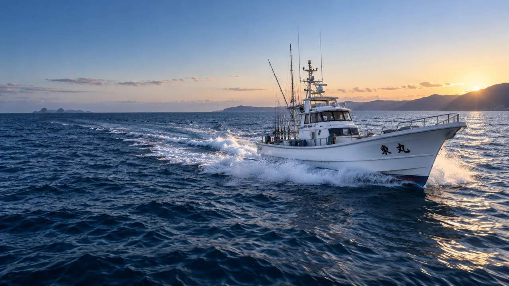
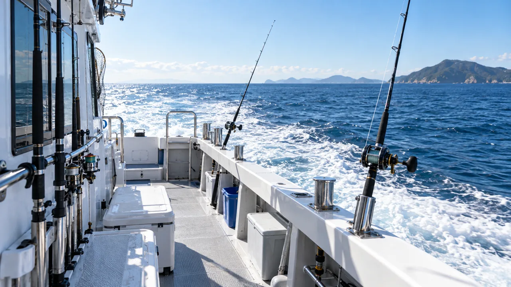

CONCEPT PREVIEWJAPANESE CHARTER FISHING
HIGASHIMARU / 海と釣りを、まっすぐに。
海へ出る。
釣る時間まで、最高に。
東丸サイト制作中
掲載内容は公開準備中のため一部仮表示です
01 / SCHEDULE
次の海へ。
空席をひと目で。
直近の出船予定は公開準備中です。正式公開後は、日付・釣りもの・残席をここで確認できます。
DATEPLANSTATUS
出船予定を準備中WEB予約準備中
釣りものを準備中受付前
運航情報を準備中受付前
02 / CATCH
今日の海を、
次の一釣へ。
釣果写真・魚種・ポイント情報を、見やすく更新できる構成です。現在の写真はサイト表現確認用のイメージです。


03 / EXPERIENCE
海の近さが、
一日の記憶になる。
道具を置く場所、移動のしやすさ、海を見渡す視界。はじめての方にも分かりやすい船上体験をご案内します。
04 / FIRST TRIP
はじめてでも、
迷わない。
- 01
予約する
希望日と釣りものを選択。本番版では空席を見ながら3ステップで予約できます。
- 02
港へ向かう
集合場所・時間・持ちものを事前に分かりやすくご案内します。
- 03
海へ出る
乗船後は船長の案内に沿って出船。安全に配慮して釣りを楽しみます。
05 / RESERVATION
次の休日を、
海の上で。
Web予約・電話・LINEの受付導線は、正式情報の確認後に公開します。